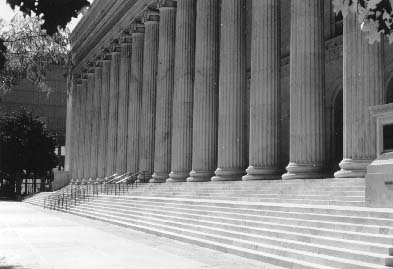
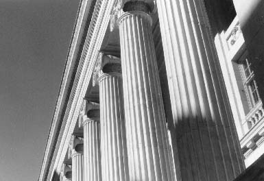
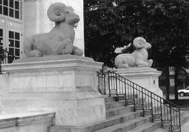

Former Main U.S. Post Office, 18th and Stout

``I...scampered in a weaving run about the fluted sides
of every enormous column that fronted
Stout Street,
a hundred feet
of sidewalk-filled waste
space between curb and building.'' [First Third p. 58]

18th Street Steps, U.S. Post Office, 18th and Stout

``A springing leap up the 18th Street side of broad stairway that
circumvented the Post Office, to walk through the warmth of its block-long
lobby...''
Literary Kicks
Neal's Denver
Contributed by
Andrew Burnett